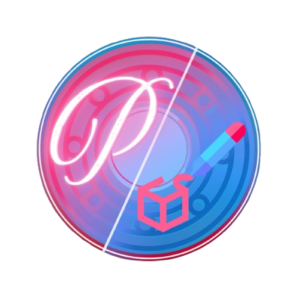
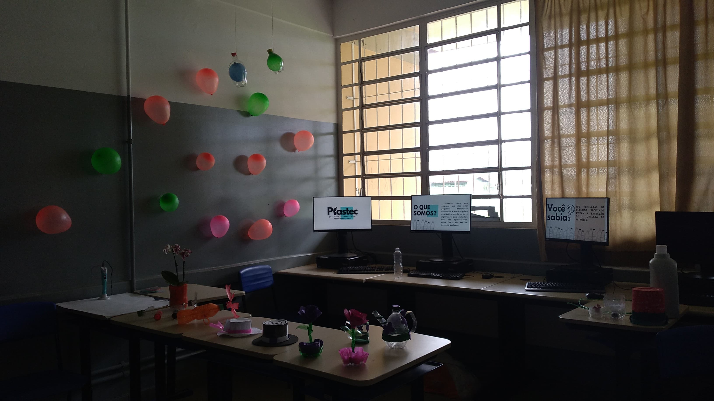
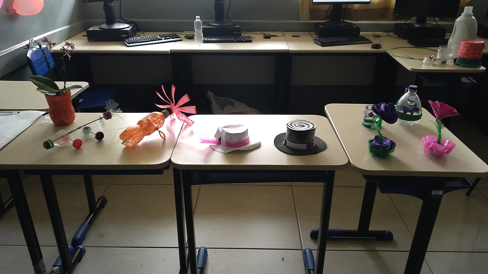
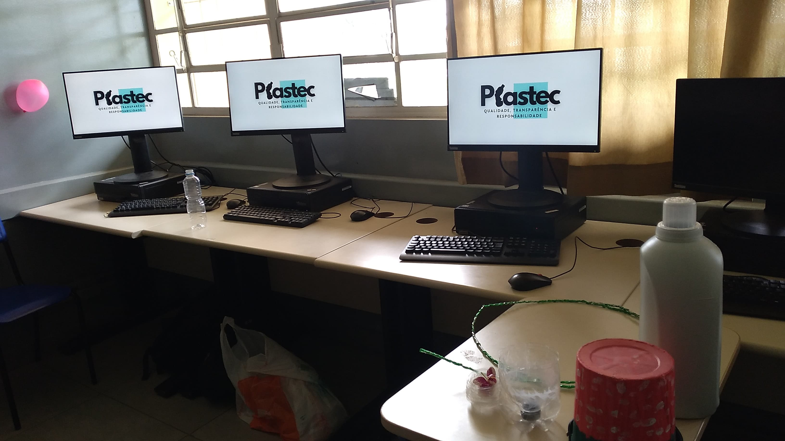

A PlásTec nasceu da vontade de repensar o plástico descartado. Transformamos garrafas PET e outros materiais plásticos em peças artesanais únicas — unindo sustentabilidade, criatividade e tecnologia.



Projeto Integrador II — Etec de Carapicuíba, 2024
A PlásTec é um projeto que surgiu com o objetivo inicial de produzir filamentos de caneta 3D a partir de material PET-G reciclado. Após enfrentar desafios técnicos nesse processo, o projeto evoluiu e ampliou seu escopo: passamos a criar artesanatos funcionais e decorativos produzidos a partir de garrafas plásticas e outros resíduos de plástico.
Cada peça que produzimos conta a história de uma garrafa que seria descartada — e que, com criatividade e dedicação, se tornou uma flor, um balde, um jogo de chá, ou até um planetário. Acreditamos que o lixo de hoje pode ser a arte de amanhã.
Utilizamos garrafas PET e plásticos descartados como matéria-prima principal, contribuindo para a redução de resíduos.
Cada peça é produzida à mão, com corte, modelagem a calor, pintura e montagem artesanal feitas pelos membros da equipe.
Utilizamos canetas 3D com filamento PLA para criar detalhes, hastes e elementos estruturais nas nossas peças artesanais.
Desenvolvido na Etec de Carapicuíba, na disciplina Projeto Integrador II, apresentado em feira em dezembro de 2024.